Auditable Decision-Making in Intelligent Cyber-Physical Systems Using Semantic Transition and Rough Sets⋆
Pavlo Radiuk1,∗,†, Oleksander Barmak1,† and Iurii Krak3,†
1 Khmelnytskyi National University, 11, Institutes str., Khmelnytskyi, 29016, Ukraine
2 Taras Shevchenko National University of Kyiv, 64/13, Volodymyrska str., Kyiv, 01601, Ukraine
3 Glushkov Cybernetics Institute, 40, Glushkov Ave., Kyiv, 03187, Ukraine
Abstract
Intelligent cyber-physical systems (CPS) increasingly rely on deep learning, but the opaque nature of these models introduces critical safety risks. Current local explainability methods fail to provide the verified, global decision logic required for reliable control systems, creating a significant barrier to safe deployment. In this paper, we propose the application of the SEMTRA (Global SEMantic TRAnsition) framework as a post-hoc layer for the quantitative auditing of control systems. The framework leverages Weighted Entropy-Density Discretization and rough set theory to extract physical semantic attributes, implementing an honest silence mechanism that explicitly identifies boundary conflicts and triggers failsafe transitions instead of making overconfident predictions. Experimental evaluations demonstrate a mean absolute error of 0.1029 for neural-to-semantic transitions, achieving a substantial logical coverage of 84.80% on test instances. Synthetic stress testing validates the robustness of the extracted rules against semantic noise, maintaining a Macro-F1 score of 0.838. By formalizing the concept of the audit tax, this approach provides a reliable, mathematically grounded tool for deploying auditable artificial intelligence, enabling engineers to inspect structural failures, ensure operational transparency, and guarantee safety in complex industrial environments.
Keywords
Explainable AI (XAI), cyber-physical systems, rough sets, model auditing, production rules, semantic transition 1
Modern intelligent cyber-physical systems (CPS), including autonomous vehicles and medical monitoring platforms, rely extensively on deep learning models for sensor fusion and decision-making. Despite their remarkable predictive performance, the inherent opacity of these architectures introduces severe safety risks. Consequently, the implementation of explainable artificial intelligence has emerged as a fundamental requirement for deploying such systems in highly regulated environments [1]. Furthermore, recent systematic syntheses on trustworthy artificial intelligence emphasize that transparency artifacts must provide actionable accountability and verifiable reasoning rather than merely serving as decorative interpretability elements [2].
The problem under consideration is the profound inability of prevailing local explanation techniques to supply verified, reusable, and globally consistent decision logic for cyber-physical systems. Traditional local methods often generate isolated saliency maps that fail to satisfy rigorous truthfulness and reliability requirements, a critical limitation frequently observed in clinical diagnostic evaluations [3]. Therefore, a correct operational decision within a safety-critical CPS necessitates a mathematically stable bridge between high-dimensional neural representations and physically meaningful semantic variables. Preliminary investigations into transition matrices have demonstrated that linear mappings can successfully elucidate deep feature spaces without modifying the weights of the underlying network [4, 5]. In parallel, theoretical advancements in geometric representation learning dictate that such transformations should maintain structural consistency under valid physical object deformations [6].
Addressing this problem highlights the importance of presenting novel scientific contributions that explicitly manage structural uncertainty. In technical control domains, deterministic classification labels are frequently insufficient. For instance, recent CPS-oriented research on photovoltaic control similarly demonstrates that expert-rule subsystems can generate transparent operating-mode decisions, while neural networks assess their optimality and support real-time correction under variable environmental conditions [7]. Integrating fuzzy logic principles offers a robust mathematical avenue for safety-oriented assessments under ambiguous or noisy conditions [8]. Therefore, formulating a global post-hoc auditing layer that structurally identifies boundary conflicts and intentionally abstains from unreliable predictions is of paramount importance for the safe deployment of intelligent CPS.
The goal of this study is to improve the interpretability, auditability, and safety of intelligent cyber-physical systems by establishing a mathematically transparent post-hoc framework that translates uninterpretable latent neural features into explicit, conflict-aware symbolic rulebooks.
To achieve this goal, the explicit objective of this study is to develop and validate the SEMTRA (Global SEMantic TRAnsition) framework as a non-destructive auditing layer for existing neural controllers. The major contributions of this work are as follows:
We establish a linear transition-matrix formulation that maps compressed deep representations into physically interpretable semantic attributes without requiring the underlying controller to be retrained.
We implement a stable Weighted Entropy-Density Discretization (WEDD) module that balances entropy reduction with local data density to convert continuous signals into robust symbolic states.
We propose a rough-set rule-induction mechanism that forms a global rulebook featuring explicit management of structural failures, conflict regions, and algorithmic abstention.
The remainder of this paper is structured as follows. Section 2 reviews related work in concept-based modeling, rule induction, and semantic transfer. Section 3 details the architecture of the proposed SEMTRA framework. Section 4 presents empirical evaluation results on benchmark datasets and synthetic stress tests. Section 5 analyzes the practical implications for cyber-physical systems. Section 6 concludes the paper and outlines future research directions.
Medical image analysis reviews show that local post-hoc explanations can support model inspection but cannot serve as standalone clinical evidence [9]. Broader evaluations of black-box models report the same limitation: isolated attribution maps rarely provide reproducible decision policies for complex automated systems [10]. Recent electrocardiogram studies, therefore, argue that explanation artifacts should correspond to established domain knowledge rather than to statistical saliency alone [11]. Concept-based methods address this issue by mapping internal neural activations to human-understandable variables [12]. Ante-hoc approaches, including vision-language-guided concept bottleneck models, embed this alignment during training [13], whereas concept embedding models preserve predictive performance while representing high-level semantic factors [14]. For deployed cyber-physical systems, however, post-hoc concept bottleneck models are often more practical because they can generate concept-level explanations without redesigning validated predictors [15]. This transition perspective can be further strengthened by Lie group formulations that enforce equivariant transition matrices within post hoc explanation layers [5].
Moving from continuous concepts to actionable decisions requires symbolic extraction. Decision trees remain a standard baseline for converting continuous inputs into hierarchical branching rules [16]. However, they usually force deterministic decisions even when sensory evidence is contradictory. Rule-oriented anomaly-detection frameworks emphasize that opaque model behavior must be decomposed into inspectable structures to improve transparency [17]. Fuzzy-rough rule induction addresses boundary uncertainty by using graded lower and upper approximations, thereby reducing overconfident decisions in ambiguous regions [18]. The quality of these rules depends strongly on discretization. Flexible non-monotonic discretization better reflects supervised structure than rigid monotonic cuts [19], while kernel density estimators can help place boundaries away from sparse regions in high-dimensional semantic spaces [20].
Semantic attribute transfer offers a controlled benchmark for evaluating post-hoc explanation frameworks. Foundational visual recognition studies showed that unseen classes can be identified by transferring knowledge from shared human-defined attributes [21]. This paradigm formalized the use of intermediate semantic vocabularies in predictive modeling [22]. Later methods, including attribute-guided transformers, improved visual-semantic alignment by linking localized visual evidence to target attributes [23]. Related attention-based approaches further demonstrated the predictive value of external semantic guidance [24], while cross-attribute transformer architectures refined compatibility between visual features and semantic descriptions [25]. For reproducible validation, the AwA2 collection [12] remains a widely used benchmark, as it provides expert-defined semantic prototypes for zero-shot visual categorization.
Despite this progress, important gaps remain. Current post-hoc concept bottleneck models largely rely on continuous intermediate representations and do not provide a discrete symbolic layer for explicit logical reasoning [26, 27]. Standard rule-extraction algorithms also tend to force decisions at structural boundaries, omitting formal abstention mechanisms needed for CPS safety. The proposed study addresses these gaps by combining Weighted Entropy-Density Discretization for noise-robust symbolic states with rough-set granulation for conflict-aware rule induction. When contradictory semantic evidence is detected, the resulting rulebook activates an honest silence protocol rather than producing an overconfident output. By formalizing the audit tax and mapping compressed neural features to a transparent global rulebook without retraining, this work provides a verifiable auditing mechanism that purely predictive or local explanation methods cannot deliver.
The proposed SEMTRA framework is designed as a modular post-hoc auditing pipeline that operates on top of a frozen neural-network feature extractor. The architecture consists of two main stages: neural-to-semantic transformation and semantic-to-symbol granulation (see Figure 1).
The first stage creates a mathematically transparent bridge between the latent space
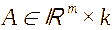
and the target space of semantic attributes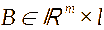
. For this purpose, SEMTRA uses a linear ridge-regression operator, which avoids the complex nonlinear distortions inherent in deep networks. The result is a global transition matrix T, in which each weight can be directly inspected by an auditor to evaluate the influence of specific neural features on the physical characteristics of the object.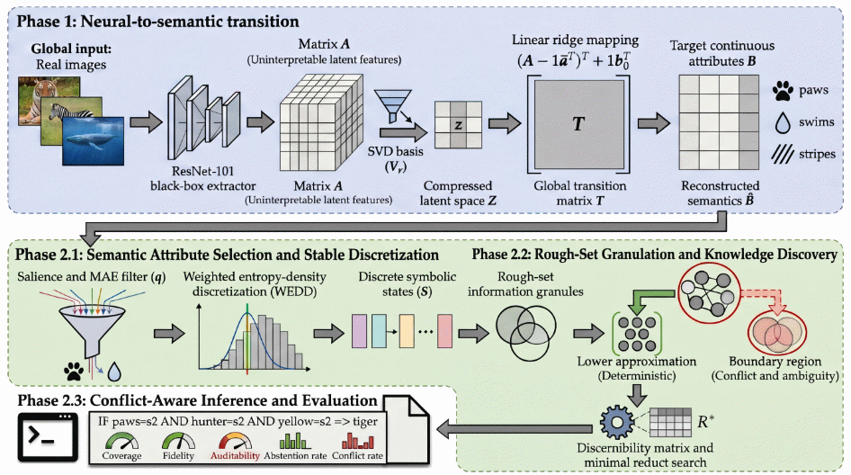
igure 1: Conceptual SEMTRA architecture: from the latent space of a neural network to a verified rulebook.To convert continuous attribute values into symbolic states, SEMTRA applies Weighted Entropy-Density Discretization (WEDD). Unlike standard decision trees, WEDD minimizes the combined objective function, as shown in Equation (1):
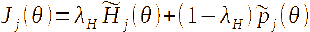 |
(1) |
where
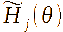
is information entropy and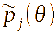
is a proxy for local probability density, estimated through Kernel Density Estimation (KDE).This approach places decision thresholds in sparse regions of the semantic space, increasing the system's robustness to small sensor-noise perturbations.
Based on the discretized states S, SEMTRA forms an indiscernibility relation. Objects with identical semantic signatures but different target classes form a boundary region. Using the principles of rough-set lower approximation, SEMTRA induces a rulebook R as follows:
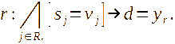 |
(2) |
To ensure compact audit artifacts, the framework searches for minimal reducts: the smallest attribute subsets sufficient to preserve the logical integrity of the knowledge base.
During real-time operation, the system can encounter two critical cases:
Rule conflict: Multiple activated rules propose different decisions. The conflict is resolved by calculating an aggregate support score
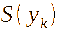
.Structural abstention: If the input falls into a region not described by any rule, or into a region of high uncertainty, SEMTRA initiates an honest abstention. In the CPS context, this is a critical signal for transitioning the system into a failsafe mode.
The covered-fidelity metric (Figure 2) is used to quantify how accurately the extracted logic reproduces the behavior of the underlying neural network on the subset of audited cases.
F 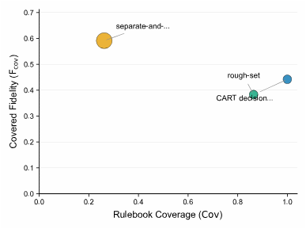
igure
2:
Trade-off between rulebook coverage and fidelity. SEMTRA occupies a
high-coverage region while explicitly reporting conflicts.
For empirical validation of the SEMTRA framework, we used the standard Animals with Attributes 2 (AwA2) benchmark, which contains 50 object classes described by 85 semantic attributes. In addition, a synthetic stress test was used to analyze algorithmic robustness under controlled conditions.
The first evaluation stage assessed the accuracy with which the transition matrix reconstructed semantic attributes. According to five-run results (see Table 1), the test set achieved a mean absolute error (MAE) of 0.1029 ± 0.0005. The Pearson correlation between predicted and reference attributes was 0.8070 ± 0.0018, indicating high fidelity of the neural-to-semantic bridge.
AwA2 Protocol A transition reconstruction metrics. Metrics are reported as mean ± standard deviation across five seeds
Split |
MAE |
RMSE |
Mean semantic correlation |
train |
0.1027 ± 0.0003 |
0.1482 ± 0.0004 |
0.8079 ± 0.0009 |
validation |
0.1030 ± 0.0003 |
0.1486 ± 0.0005 |
0.8065 ± 0.0014 |
test |
0.1029 ± 0.0005 |
0.1484 ± 0.0007 |
0.8070 ± 0.0018 |
The comparison of SEMTRA with classical symbolic algorithms (see Table 2) revealed key advantages for audit systems. Although Classification and Regression Trees (CART) provide 100% coverage, they cannot identify their own uncertainty regions. In contrast, SEMTRA achieved the following:
Coverage: 84.80% ± 5.30%of test instances received a deterministic logical explanation.
Compactness: The generated base contained only 59.00% ± 2.55% rules, with an average of only 4.04 conditions per rule, making them readily readable by a human operator.
Auditing fidelity: Covered fidelity reached 40.48%.
General rulebook properties and symbolic-baseline comparison. Point estimates are reported alongside standard deviations evaluated over five random seeds for the proposed method
Metric |
Value (ours) |
CART baseline |
Separate-and-conquer |
Number of rules |
59.00 ± 2.55 |
53 |
197 |
Test coverage |
0.8480 ± 0.0530 |
1.0000 |
0.2620 |
Covered accuracy |
0.3973 ± 0.0109 |
0.4129 |
0.6334 |
Covered fidelity to base |
0.4048 ± 0.0078 |
- |
- |
Average conditions per rule |
4.0397 ± 0.0543 |
7.0000 |
3.2589 |
Test abstention rate |
0.1520 ± 0.0530 |
0.0000 |
0.7380 |
Test conflict rate |
0.1375 ± 0.0532 |
0.0000 |
0.2301 |
Although the covered-fidelity metric is lower than the accuracy of the neural network, it quantitatively defines the audit tax: the part of the model logic that can be represented as strict logical predicates without sacrificing interpretability.
For cyber-physical systems, stability under sensor-signal distortion is critical. Experiments with semantic-noise injection, σ ∈ [0,0.20], showed high robustness (see Table 3):
With zero noise, a Macro-F1 score of 0.879 was achieved.
At the maximum noise level (σ = 0.20), performance decreased only to 0.838, while coverage remained at 95.2%.
These data confirm that WEDD effectively filters micro-perturbations while preserving the integrity of logical inference.
To make the audit useful for CPS developers and operators, SEMTRA provides visual tools for analyzing the “health” of the model logic.
Instead of probabilistic neural-network vectors, the auditor receives explicit production rules (see Table 4). For example, for an object such as a zebra (rule R0004), the system extracts physical boundaries including low hunter and water attributes, low smallness, high jungle association, and intermediate yellowness. Specific numeric bounds allow engineers to compare the AI logic against sensor specifications.
Synthetic stress-test results averaged over random seeds
Noise (σ) |
MAE |
Threshold error |
Rule Jaccard |
Macro-F1 |
Coverage |
0.000 |
0.000 |
0.014 |
0.700 |
0.879 |
0.971 |
0.100 |
0.021 |
0.018 |
0.763 |
0.881 |
0.962 |
0.200 |
0.041 |
0.017 |
0.743 |
0.838 |
0.952 |
Representative induced production rules from AwA2 Protocol A. Support refers to the number of instances covered in the training partition
Rule |
Antecedent |
Numeric bounds |
Class |
Support |
Conf. |
|
R0001 |
paws=s2 AND hunter=s2 AND small=s0 AND yellow=s2 |
paws≥ 0.40; hunter≥ 0.40; small<0.15; yellow≥ 0.40 |
tiger |
115 |
0.896 |
|
R0003 |
stripes=s1 AND hooves=s3 AND paws=s0 AND hands=s0 AND small=s1 AND yellow=s1 |
stripes∈[0.15,0.40]; hooves≥ 0.70; paws<0.15; hands<0.15; small∈[0.15,0.40]; yellow∈[0.15,0.40] |
antelope |
132 |
0.871 |
|
R0004 |
hunter=s0 AND water=s0 AND small=s0 AND jungle=s2 AND yellow=s1 |
hunter<0.15; water<0.15; small<0.15; jungle≥ 0.40; yellow∈[0.15,0.40] |
zebra |
434 |
0.866 |
|
Semantic-transition analysis (see Figure 3 and specifically Figure 3a) reveals which physical features dominate the model. For example, the attributes “paws” and “vegetation” have the highest transition salience, whereas “plankton” has the lowest. This helps identify blind spots: attributes ignored by the model that may be critical for CPS safety.
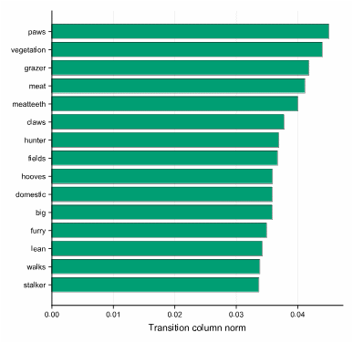 |
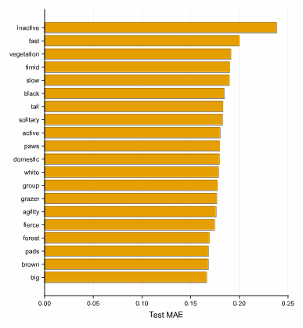 |
(a) |
(b) |
Figure 3: Semantic attribute diagnostics: (a) transition salience by semantic attribute; (b) attribute-wise semantic reconstruction error on AwA2.
The optimization plots (see Figure 4) provide an audit dashboard. By changing the minimum rule-confidence threshold, one can observe how rulebook coverage and abstention frequency change. This enables the system to be tuned to specific operational requirements, from high autonomy to strict human oversight at every step.
F 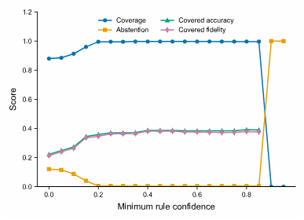
igure
4:
Rulebook and threshold optimization. Coverage, abstention, covered
accuracy, and covered fidelity as the minimum rule-confidence
threshold varies.
In misclassification cases, such as a hamster being identified as a mole, SEMTRA provides a full inference trace. This makes it possible to determine immediately whether the error was caused by sensor failure, incorrect input attributes, or a logical conflict in the knowledge base.
Representative rule inference traces with object ID, prediction, matched-rule evidence, and antecedent states
Case |
Object |
True |
Pred. |
Mode |
Rule |
Support |
Conf. |
Antecedent states |
correct exact |
5083 |
collie |
collie |
exact |
R0027 |
1675 |
0.208 |
stripes=s0; hooves=s0; swims=s1; paws=s3; longneck=s0; hunter=s1; ocean=s1; quadrapedal=s3 |
abstention |
24024 |
ox |
abstain |
exact |
R0029 |
2820 |
0.195 |
stripes=s0; hooves=s2; swims=s1; paws=s0; longneck=s1; hunter=s0; ocean=s1; quadrapedal=s2 |
fallback error or boundary |
16781 |
hamster |
mole |
fallback |
- |
- |
- |
stripes=s0; hooves=s1; swims=s1; paws=s2; longneck=s0; hunter=s0; ocean=s1; quadrapedal=s2 |
Case |
Object |
True |
Pred. |
Mode |
Rule |
Support |
Conf. |
Antecedent states |
The experiments demonstrate three main findings. First, the method demonstrates high reproducibility across datasets. Second, the observed conflict rate of 13.75% enables weak points in the trained model to be detected in advance. Third, the system can operate with incomplete data owing to the soft-matching mechanism based on Hamming distance.
Integrating deep learning into intelligent CPS creates a paradox: superior predictive performance comes at the cost of opaque decision-making. Relying solely on isolated, local XAI techniques is inadequate for ensuring safety in high-risk environments [1, 3]. Because local explanations fail to provide globally verifiable reasoning, our SEMTRA framework explicitly addresses this gap by establishing a transparent digital twin of the model’s logic that aligns with trustworthy AI guidelines [2].
A core advantage of SEMTRA is its ability to manage uncertainty through a formal “honest silence” protocol. While conventional models produce deterministic outputs in the presence of ambiguous or contradictory sensor data, SEMTRA systematically abstains. As shown in Section 4, the system detected rule conflicts in 13.75% of cases and triggered structured abstentions in 15.20% of cases. In a CPS context, this acts as a failsafe, instructing autonomous platforms to halt or request human intervention. Conversely, existing fuzzy logic approaches quantify ambiguity but lack these discrete structural abstentions [8].
Algorithmic stability against input perturbations is important for safe CPS deployment. While deep networks are highly sensitive to noise, prior studies have used linear matrices [4, 5] and geometric learning [6] to ensure structural consistency. Building on this, SEMTRA employs WEDD to strategically place decision thresholds in sparse semantic regions (Figure 4). Synthetic stress tests (Table 3) prove the framework’s structural integrity: even at a 0.20 noise level, it preserved a 0.838 Macro-F1 score. This derived symbolic rulebook easily outperforms fragile local XAI tools such as LIME and SHAP.
Conceptually, SEMTRA operationalizes the “audit tax”, i.e., the exact performance penalty of compressing complex neural decisions into verifiable production rules (Equation 2). Table 2 reports a rule-covered fidelity of 40.48%, representing the proportion of network knowledge that is perfectly replicated as legally auditable logic. In regulated sectors, this trade-off is an important investment for generating certifiable, interpretable execution trails (Table 5). Because SEMTRA operates post hoc on frozen feature extractors (Section 3.1), engineers can retrofit legacy controllers without incurring costly network retraining.
Despite these strengths, SEMTRA possesses notable limitations. Its strict reliance on static, manually annotated semantic dictionaries restricts adaptability in dynamic industrial environments where novel attributes emerge. Consequently, the audit tax highlights that SEMTRA currently serves as a parallel diagnostic instrument rather than a holistic neural-network replacement. Overcoming this semantic bottleneck is a future research direction, specifically by leveraging large language models to power automated, unsupervised concept discovery engines that dynamically construct attribute spaces.
This study established the SEMTRA framework as an essential post-hoc auditing layer for translating opaque deep learning features into transparent, conflict-aware production rules for intelligent CPS. By bridging the gap between latent representations and symbolic logic, the method demonstrated excellent neural-to-semantic reconstruction with a mean absolute error of 0.1029 and achieved deterministic logical coverage for 84.80% of test cases. Importantly, the framework proved its robustness against semantic noise, maintaining a Macro-F1 score of 0.838 under maximum simulated perturbation. Its ability to trigger an honest silence during conflicting scenarios provides a critical failsafe mechanism for safety-sensitive applications. However, the requirement of an audit tax, i.e., a necessary reduction in overall fidelity to ensure complete interpretability, and the reliance on static, human-annotated semantic dictionaries remain significant study limitations. This creates challenges for scalability in rapidly changing operational environments. Ultimately, advancing such rule-based auditing techniques will be pivotal for establishing fully certifiable, trustworthy artificial intelligence in next-generation autonomous platforms.
Future research directions will focus on overcoming these bottlenecks by integrating automated concept discovery techniques, such as those powered by large language models, to dynamically generate semantic representations.
During the preparation of this work, the authors utilized generative artificial intelligence tools to enhance the linguistic quality of this manuscript. The language model Gemini 3.1 Pro Preview (Google LLC) and the language service Grammarly (Grammarly, Inc.) were employed for copyediting assistance, specifically to refine grammar, spelling, and stylistic consistency. Following this, the authors conducted a comprehensive review and revision, ensuring all content accurately reflects their research and conclusions. The authors retain full responsibility for the scientific integrity and final content of this paper.
W. Yang, Y. Wei, H. Wei, Y. Chen, G. Huang, Survey on explainable AI: From approaches, limitations and applications aspects, Hum.-Centric Intell. Syst. 3 (2023) 161-188. doi:10.1007/s44230-023-00038-y.
S. Ali, T. Abuhmed, S. El-Sappagh, K. Muhammad, J. M. Alonso-Moral, R. Confalonieri, R. Guidotti, J. Del Ser, N. Diaz-Rodriguez, F. Herrera, Explainable artificial intelligence (XAI): What we know and what is left to attain trustworthy artificial intelligence, Inf. Fusion 99 (2023) 101805. doi:10.1016/j.inffus.2023.101805.
W. Jin, X. Li, M. Fatehi, G. Hamarneh, Guidelines and evaluation of clinical explainable AI in medical image analysis, Med. Image Anal. 84 (2023) 102684. doi:10.1016/j.media.2022.102684.
P. Radiuk, O. Barmak, E. Manziuk, I. Krak, Explainable deep learning: A visual analytics approach with transition matrices, Mathematics 12 (2024) 1024. doi:10.3390/math12071024.
O. Barmak, I. Krak, S. Yakovlev, E. Manziuk, P. Radiuk, V. Kuznetsov, Toward explainable deep learning in healthcare through transition matrix and user-friendly features, Front. Artif. Intell. 7 (2024) 1482141. doi:10.3389/frai.2024.1482141.
P. Radiuk, O. Barmak, L. Bedratyuk, I. Krak, Equivariant transition matrices for explainable deep learning: A Lie group linearization approach, Mach. Learn. Knowl. Extraction 8 (2026) 92. doi:10.3390/make8040092.
Y. Tsybulskiy, O. Atamaniuk, E. Fedorov, Expert system for controlling operating modes of solar panels with neural network-based optimality assessment of decisions, Comput. Syst. Inf. Technol. No. 2 (2026) 185–197. doi:10.31891/csit-2026-2-16.
A. Musaelian, S. Batzner, A. Johansson, L. Sun, C. J. Owen, M. Kornbluth, B. Kozinsky, Learning local equivariant representations for large-scale atomistic dynamics, Nat. Commun. 14 (2023) 579. doi:10.1038/s41467-023-36329-y.
P. Radiuk, B. Rusyn, O. Melnychenko, T. Perzynski, A. Sachenko, S. Svystun, O. Savenko, Criticality assessment of wind turbine defects via multispectral uav fusion and fuzzy logic, Energies 18 (2025) 4523. doi:10.3390/en18174523.
H. Bollaert, M. Palangeti\'c, C. Cornelis, S. Greco, R. Slowinski, FRRI: A novel algorithm for fuzzy-rough rule induction, Inf. Sci. 686 (2025) 121362. doi:10.1016/j.ins.2024.121362.
O. Kovalchuk, O. Barmak, P. Radiuk, L. Klymenko, I. Krak, Towards transparent ai in medicine: Ecg-based arrhythmia detection with explainable deep learning, Technologies 13 (2025) 34. doi:10.3390/technologies13010034.
Y. Xian, C. H. Lampert, B. Schiele, Z. Akata, Zero-shot learning: A comprehensive evaluation of the good, the bad and the ugly, IEEE Trans. Pattern Anal. Mach. Intell. 41 (2019) 2251-2265. doi:10.1109/TPAMI.2018.2857768.
C. H. Lampert, D. Pucher, J. Dostal, Animals with attributes 2, Dataset website, 2017. URL: https://cvml.ista.ac.at/AwA2/.
B. H. M. van der Velden, H. J. Kuijf, K. G. A. Gilhuijs, M. A. Viergever, Explainable artificial intelligence (XAI) in deep learning-based medical image analysis, Med. Image Anal. 79 (2022) 102470. doi:10.1016/j.media.2022.102470.
V. Hassija, V. Chamola, A. Mahapatra, A. Singal, D. Goel, K. Huang, S. Scardapane, I. Spinelli, M. Mahmud, A. Hussain, Interpreting black-box models: A review on explainable artificial intelligence, Cogn. Comput. 16 (2024) 45-74. doi:10.1007/s12559-023-10179-8.
D. Srivastava, G. Yan, T.-W. Weng, VLG-CBM: Training concept bottleneck models with vision-language guidance, in: A. Globerson, L. Mackey, D. Belgrave, A. Fan, U. Paquet, J. Tomczak, C. Zhang (Eds.), Advances in Neural Information Processing Systems 37, volume 37, Curran Associates, Inc., Red Hook, NY, USA, 2024, pp. 79057-79094. doi:10.52202/079017-2510.
M. Espinosa Zarlenga, P. Barbiero, G. Ciravegna, G. Marra, F. Giannini, M. Diligenti, Z. Shams, F. Precioso, S. Melacci, A. Weller, P. Lio, M. Jamnik, Concept embedding models: Beyond the accuracy-explainability trade-off, in: S. Koyejo, S. Mohamed, A. Agarwal, D. Belgrave, K. Cho, A. Oh (Eds.), Advances in Neural Information Processing Systems 35, volume 35, Curran Associates, Inc., Red Hook, NY, USA, 2022, pp. 21400-21413. URL: https://proceedings.neurips.cc/paper_files/paper/2022/hash/867c06823281e506e8059f5c13a57f75-Abstract-Conference.html.
A. Melnyk, B. Zimchenko, Crisp-fuzzy rule management in the cloud: Enabling scalable decision-making for cyber-physical systems, Comput. Syst. Inf. Technol. No. 1 (2025) 163–170. doi:10.31891/csit-2025-1-19.
I. D. Mienye, N. R. Jere, A survey of decision trees: Concepts, algorithms, and applications, IEEE Access 12 (2024) 86716-86727. doi:10.1109/ACCESS.2024.3416838.
Y. Zhang, R. Li, N. Wu, Q. Li, X. Lin, Y. Hu, T. Li, Y. Jiang, Dissect black box: Interpreting for rule-based explanations in unsupervised anomaly detection, in: A. Globerson, L. Mackey, D. Belgrave, A. Fan, U. Paquet, J. Tomczak, C. Zhang (Eds.), Advances in Neural Information Processing Systems 37, volume 37, Curran Associates, Inc., Red Hook, NY, USA, 2024, pp. 84169-84196. doi:10.52202/079017-2675.
H. Şenozan, B. Soylu, A flexible non-monotonic discretization method for pre-processing in supervised learning, Pattern Recognit. Lett. 181 (2024) 77-85. doi:10.1016/j.patrec.2024.03.024.
G. Biroli, M. Mezard, Kernel density estimators in large dimensions, SIAM J. Math. Data Sci. 8 (2026) 46-76. doi:10.1137/24M1703677.
C. H. Lampert, H. Nickisch, S. Harmeling, Learning to detect unseen object classes by between-class attribute transfer, in: 2009 IEEE Conference on Computer Vision and Pattern Recognition (CVPR 2009), IEEE, Miami, FL, USA, 2009, pp. 951-958. doi:10.1109/CVPRW.2009.5206594.
C. H. Lampert, H. Nickisch, S. Harmeling, Attribute-based classification for zero-shot visual object categorization, IEEE Trans. Pattern Anal. Mach. Intell. 36 (2014) 453-465. doi:10.1109/TPAMI.2013.140.
S. Chen, Z. Hong, Y. Liu, G.-S. Xie, B. Sun, H. Li, Q. Peng, K. Lu, X. You, TransZero: Attribute-guided transformer for zero-shot learning, Proc. AAAI Conf. Artif. Intell. 36 (2022) 330-338. doi:10.1609/aaai.v36i1.19909.
M. F. Naeem, Y. Xian, L. Van Gool, F. Tombari, I2DFormer+: Learning image to document summary attention for zero-shot image classification, Int. J. Comput. Vis. 132 (2024) 3806-3822. doi:10.1007/s11263-024-02053-3.
S. Chen, Z. Hong, W. Hou, G.-S. Xie, Y. Song, J. Zhao, X. You, S. Yan, L. Shao, TransZero++: Cross attribute-guided transformer for zero-shot learning, IEEE Trans. Pattern Anal. Mach. Intell. 45 (2023) 12805-12821. doi:10.1109/TPAMI.2022.3229526.
⋆ICyberPhyS-2026: 3rd International Workshop on Intelligent & CyberPhysical Systems, July 2, 2026, Khmelnytskyi, Ukraine
1⋆ Corresponding author.
† These authors contributed equally.
radiukp@khmnu.edu.ua (P. Radiuk); barmako@khmnu.edu.ua (O. Barmak); iurii.krak@knu.ua (I. Krak)
0000-0003-3609-112X (P. Radiuk); 0000-0003-0739-9678 (O. Barmak); 0000-0002-8043-0785 (I. Krak)